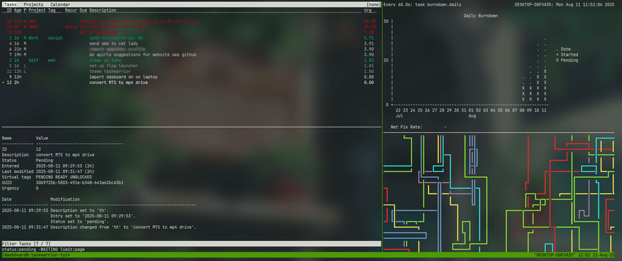

@wintrmoon
yes april, every one of those suck,,, give me a weird al parody or polka version of
their song and then its okay,
I have bad takes okay,,
yes april, every one of those suck,,, give me a weird al parody or polka version of
their song and then its okay,
I have bad takes okay,,
uhh I have a confession to make,,, I HATE music that didn't come out in the last 25 years,,, expect for weird al,,, so that means that if I hear the original song I think 'oh its that one weird al song but the lyrics are wrong',, I'm sorry
I feel like nathan fielder in the rehearsal, so for a up coming job interview I'm noting down every possible question in french they can ask including every variations of the questions and possible follow-up questions,,, there is also a psychological test I wonder IF I WILL PASS THAT??
it's the first time I don't feel really worried in life, I always worry about either my social life or my career but I think I'm slowly starting to figure both of those out
1: it's been super long since I've ever been in a friend group and now
I can finally say that I'm back in a group where I can be myself and not have
any worries about if I say something wrong or stupid
2: I have a genuine shot at my dream job very soon, after all of the fear
about myself and my education the fear is finally starting to settle, I
really hope I get this job
youtube just recommended me a AI song, I hate it, you know me better than this
update on the taskwarrior thingy: I made it sync with my pc, laptop and phone and also made a little dashboard for it :3
3 different people have already asked me if I am autistic, what does this mean
I've been trying out taskwarrior and omg it is so fun to complete task with that, it scratches a wound that I didn't even know I had
to start off this new page I would like to share a little story that happened last week:
in the busier seasons I get to see at least 150 different passengers on the train in my zone on one trip (with 500~ in total on the train), some of these people I get to know a little, thanks to the fact I spend at least 16 hours with them
there was this couple on the train that recognized me from another journey they did and then they started to talk about how happy they were to see me again and that the small attention to detail really matter, they said that my friendlies really made a difference for their trip. that was the nicest compliment I have gotten in my career so far! at the end of the conversation they asked for 2 paper cups, I said 'no problem I'll get them in a bit', I go check in the other passengers, and then a couple minutes later I end my shift because my work was done, then I leave the train,,, now 5 minutes after the train has left I REMEMBER I STILL HAD TO BRING THOSE CUPS, the lady was so sweet to me AND THEN I FORGET SOMETHING SO SIMPLE, FUCK ME
but it's nice to hear that those small details DO get recognized, and hearing this after having one of the less enjoyable Interactions at work makes it all so much worth it